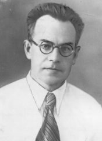

Шапошников Константин
Яковлевич
С сайта Энциклопедия ТРТУ

Шапошников
Константин Яковлевич (15.05.1908, г. Павловск Воронежской области - 1991,
Ростов-на-Дону), доктор технических наук, профессор, директор ТРТИ 1952-1956.
12 февраля 1952 МВО СССР поручает ему возглавить строительство Таганрогского
радиотехнического института и назначает и.о. директора вуза. 3 апреля 1953 МВО
СССР утверждает к.т.н. Шапошникова К.Я. директором ТРТИ, а с 16 апреля 1953
назначает и.о. зав. кафедрой электрических машин и измерений, автоматики и
телемеханики.
Шапошников К.Я. окончил школу в 1926 в Павловске. С 1926 по 1929 работает
электромонтёром на шахте 5-6 Министерства угольной промышленности в г. Сталине.
За активное участие в восстановлении шахт и электростанций области Константин
Яковлевич награжден 2 орденами "Знак почёта" и 3 медалями.
1930-1935 - время учёбы в Новочеркасском энергетическом институте. В 1937
поступление в аспирантуру НПИ и работа старшим преподавателем. В 1941 успешная
защита диссертации на степень к.т.н. В 1942 утверждается в учёном звании
доцента. 1941 - декан энергетического ф-та НПИ.
В июле 1941 добровольцем вступает в истребительный отряд в качестве командира
пулемётного взвода, в ноябре 1941 участвует в боях за освобождение г. Ростова.
В марте 1943 по указанию ЦК КПСС работал в Ростовском обкоме КПСС инструктором,
зам. зав. отделом тяжёлой промышленности.
1944-1947 - учёба в высшей партийной школе при ЦК КПСС. В 1949 направлен в НПИ
на должность директора по учебной части.
В период 1952-1956 под руководством Шапошникова К.Я. в ТРТИ организовано три
факультета: радиотехнический, электровакуумной техники, электроприборостроительный.
Создаются учебно-экспериментальные мастерские. Открывается вечернее отделение.
Организованы курсы для рабочих по подготовке и поступлению на вечернее
отделение ТРТИ. Ведётся строительство 2-х общежитий, жилого дома для
преподавателей, учебного корпуса Г. Созданы 23 кафедры и 39 лабораторий,
научно-исследовательский сектор института. Коллектив кафедры автоматики и
телемеханики (зав. кафедрой к.т.н., доцент Шапошников К.Я.) вёл научную работу
по автоматизации и телеуправлению нефтяными скважинами Полазнинского
нефтепромысла. Выполняются работы по хоздоговорам.
Создана исследовательская лаборатория дальнего приёма телевидения,
сконструирована антенна на два канала.
В 1958-1959 работает по совместительству в НИИ ТМ Ростовского Совнаркома. 17 октября
1959 переведён в г. Ростов-на-Дону в связи с назначением директором НИИ п/я 20
Госкомитета Совета Министров СССР по радиоэлектронике.
На главную